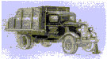

|
Volume 14 / Number 4 December
2003 FROM THE
PRESIDENT Donna
Chipperfield Happy New Year. The
Friends of Hart Park and Museum has just begun a new year. We are on
a fiscal year rather than a
calendar year and our new year began on October 1, 2002. In light of
that, there was an election of officers and I have been elected to
be the top wrangler for this outfit for the next year. I want to
thank everyone for placing their faith in me and to assure you that
I will do my best to keep all the strays under control and get us
thru safely and profitably. In 1980 we moved from
Agoura to Agua Dulce. Not long after that, my husband, Bob, told me
he had found the most wonderful place to take me. Yep, you guessed
it, Bill’s mansion. We were met by none other than Carol Sandmeier,
who gave us the VIP tour. Not long after that, she rang us up and
suggested that we come to a class that they were conducting so that
we could volunteer at the park. We both dug right in and started
giving tours and recruiting other folk to come join us. There have been quite a few changes over the years, not only in personnel, but also in the way things are done. We miss all the friends that have left over the years, but we see good things happening for the museum and park. I am quite excited about the things on the horizon for the museum and park. It is such a wonderful place for families to come and enjoy what Bill bequeathed to all of us. Have you been to the park lately? Why not plan a visit and invite a neighbor or friend. Word of mouth is the best advertising we can do…. On December 6th at
7:00 p.m. we will be celebrating Bill’s birthday in the living room
of his home. This is a very
special time not only because it is his birthday, but the house is
decorated for the holidays and is a wonderful sight to see. The
acoustics in the house are so very wonderful for these special
musical events. Belinda Gail and Curly Musgrave will be performing
for us. I have arranged for special transportation up the hill for
the evening. I urge all of you to make reservations by calling the
museum at 661-254-4584 and attend this wonderful event with us. You
will be treated not only to wonderful music from two very talented
people, but we will be having a birthday cake and champagne
afterward. Our special guests will be there to talk with you
afterward. Also. I hope to see all of you there!! Until next time, may
the good Lord take a liking to you! F
R I T Z Sheila
Miller In February of 1938 Bill Hart
lost his best friend when his beloved Pinto Pony Fritz died at age
37. Fritz was not only Bill’s best friend and co-star he was the
love of Bill’s life. Fritz was almost as famous as Bill and had his
own fan club. The “Fritz Club” boasting a membership of some 11,000
members in 1921 was a very exclusive club.You had to have a Pinto to
be a member and one member was a Moroccan Prince who imported Pintos
from North Dakota. Fritz was one of the most popular horses in the
world and Bill’s fans would send boxes of sugar and wrote letters to
Fritz in care of Bill. Broken hearted Bill had Fritz buried at the bottom of the hill of his Horseshoe Ranch and had a huge stone monument erected to mark the site.The monument reads, “A Loyal Comrade.” A tribute made from a man who loved his horse to a Pinto Pony who stole the show and on more than one occasion proved he would lay down his life for his owner. The site where Fritz
is buried and the weathered fence around the site has been in need
of some attention for some time. The volunteers here at William S.
Hart Park have taken on the project of sprucing up Fritz’s
gravesite.The project was delayed for some time when it was
discovered that the waterline to the site had been cut when Hart
Hall was built. After several years of waiting for county officials
to find the money to restore the water line, help came from the
local Kiwanis Club who came to our rescue and took on the project to
run a water line back to the site. Last Saturday November 16th
the volunteers were
finally able to paint the white picket fence surrounding Fritz’s
grave.We were able to complete the project with a little help from a
friend. Barry Parker from Dunn Edwards Corporation donated the paint
and helped with the materials needed for the project. Next spring
the volunteers will be planting flowers at Fritz’s gravesite to
finish the project. I would like to
remind all of our readers to frequent our donors businesses when you
need services or
supplies. It is through their generous support and donations
that many of our projects are made possible. Barry Parker is the
manager of the Dunn Edwards Paint at 15335 Chatsworth Street, in
Mission Hills.Thank you to Barry and to Dunn Edwards for their
support of Hart Park and to the Kiwanis Club of Santa Clarita for
all of their help. Also a big thank you to all the wonderful
volunteers and board members who came out and helped paint Fritz’s
fence. A special thanks to Norm Phillips, Park Superintendent, who
worked although still sick, along side the other volunteers. A call
above and beyond the call of duty, Norm you are our hero. A new term of office
has begun for the officers of Friends of Hart Park. Donna
Chipperfield is the new President and CEO. Laurene Weste is 1st Vice
President and Bill Crowl is Administrative Vice President. Sheila
Miller continues as Secretary and Ed Vaia as Treasurer. A new term
begins but credit must be given to the previous officers who have
worked to further the work being done to maintain this beautiful
park and historic
mansion.
POSTSCRIPT TO THE DEMPSEY PICTURE
Our recent
“Jack Dempsey knocks out Jess Willard” story evoked fond memories
for outgoing Friends of Hart Park Board President Bill Crowl who
reports he and his parents long ago dined beneath the actual prize
fight mural at the then Jack Dempsey Supper Club in New York City.
PPS Bill insists the rumor he had quiche Lorraine is not true; that
his steak was a knockout!
T O U R I N G T H E M A N S I O N Audrey Taylor
There is a pair of
moccasins in the bookcase nearest the telephone booth. We believe
Bill wore them. They are beaded all over with the “lazy” stitch.
Certainly a misnomer in the eyes of the artists who work the stitch.
Many beads - eight, ten, or fifteen -may be positioned with one
stitch. In Bill’s Native American beadwork collection there are
stunning pieces - vests, moccasins, a baby carrier, all completely
decorated in the lazy stitch. On the front of the moccasins are four
“tassels” formed from an acute triangle of tin. (Early Native
Americans found and recycled discarded flat tobacco and other tins
which they cut into many triangles, then curled them to use as
decoration on a variety of items: a woman’s dress, with many, many
of these clapless bells, as she walks there is a soft whispering
sound of movement; on moccasins (these have red-dyed horse hair from
mane or tail to enhance the tassel).While conducting tours during
the last pow wow I heard some real bells singing to everyone who
would listen. The sound traveled up the hill and soon filled Bill’s
home. We had a special visitor in handsome regalia with a profusion
of bells. He was one of the dancers from below who traditionally and
proudly had made their own regalia and so was knowledgeable about
the art forms. He said Bill’s moccasins were Cheyenne with trail
dusters. The William S. Hart mansion embodies great beauty in art - sculpture, paintings, Native American expressions and there are some wonderful hidden stories to relate about seemingly everyday things in the museum such as the Kelvinator refrigerators - one in the butler’s kitchen, the other in the upstairs guest kitchen.
One day Bill received a phone call from an executive of the Kelvinator company. Would Mr. Hart accept as a gift two new Kelvinators (the refrigerators were the company’s newest appliance) and would he tell his friends and guests how terrific the new electric refrigerators are? If so, the company would send him two! The price was right and Bill accepted the offer. Today I find myself
sharing that story with some of my tours. Of course, the old oaken
ice box in the kitchen can be an introduction to the story. Ice was
delivered daily in most cities and towns, originally by horse drawn
wagon, later by Ford Model T trucks, complete with rear canvas flap
to retain the cold, and still later by newer trucks, into the 1930’s
The householder put a blue and white sign in a front window to tell
the iceman to stop. If twenty five or forty or fifty pounds were
needed, the sign would indicate the weight by its position: right
side up meant one amount, upside down another, and on either side, a
third and fourth amount.  Newhall Ice Company’s 1938 Chevrolet Truck by Moorpark artist Tom Nelson Incidentally, the oak icebox Hart initially used was kept filled by a family-owned ice house, Newhall Ice, about three blocks away. They are still in business and still serving Santa Clarita and nearby areas. Owner Kathy Pape (former Board Director and loyal FHOP supporter) and team have added other forms of ice -including to order blankets of snow for TV, films, and that special Christmas in July party. The next time you are in the museum, notice the moccasins and the trail dusters on the bottom of the heel – thongs reaching back about two inches with a leather fluff on the end. How confident the warrior must be to walk along knowing his trail dusters, so carefully planned and made, will erase his footprints from the enemy!
CHRISTMAS AT HART MUSEUM The holiday season is
always special at La Loma De Los Vientos. The season begins
with William S. Hart’s
birthday on December 6. While the museum does not have records on
how Hart spent his holidays in Newhall, Hart does write about the
season in his
autobiography “My Life East and West.” While living in New
York as a boy, Hart sold In his autobiography
Hart writes: There was a place where several of us barefooted
newsboys used to congregate to keep warm. It was a bakery, corner of
First and Colden Streets. We stood on the iron grating. I can
remember vividly the precise location of every stand of cakes and
cookies exactly. A clergyman stopped one day and wanted to give ma a
pair of shoes. I would not take them so he had me agree to keep the
snow shoveled off the sidewalk in front of his church and rectory
until Christmas-time. My
mother asked me to go to the little brick church to Sunday
School. I went to please her, but While living in West
Farms NY Hart writes: On Sundays I attended Grace Church with
the Our little home
Christmas tree had nice presents for all us children, and a big
orange for The Hart Museum will
begin the holiday season with a concert by Belinda Gail and
Curly EXCERPTS FROM THE MAIL A very nice letter
was received from members Bill and Zettia Miller of Long Beach. Part
of the letter The ice cold drinks,
perfect. Wow, even table service for the desert. Even the popcorn
was delivered to the Thanks to all the
dedicated volunteers who helped make Silents a memorable event. |